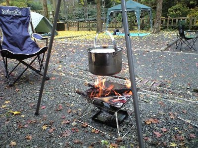
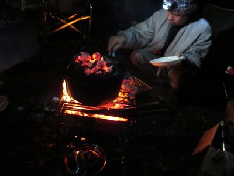
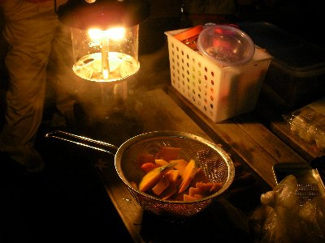
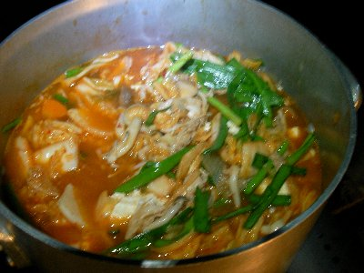
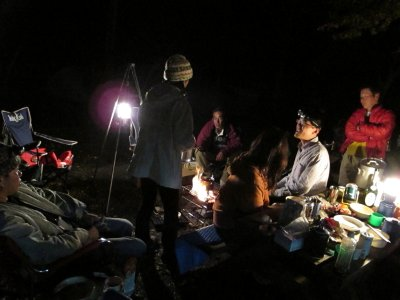
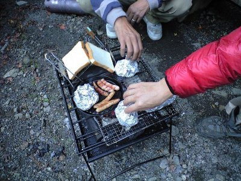

のんびり秋キャンプ | 2009年11月 幹事：べっしー＆サムちゃん |
|---|---|
| 例年は、長野県の廻り目平キャンプ場にて、秋キャンプを行ってきましたが、今年は私も土曜が仕事だったりと、日帰り参加出来るように清水区にある黒川キャンプ場で行いました。 黒川キャンプ場は、清水森林公園管理センターが管理をしていますが、市営のため無料で利用出来ます。 区画で仕切られていて、直火は禁止。オートキャンプ場みたいですが車の侵入は禁止。炊事場とトイレ完備です。山間にあり近くを川が流れていて、とても静かなところです。（川の音除く） | |
 黒川キャンプ場現地 |  この場所を占拠♪ |
| キャンプ当日は、朝から土砂降り。ザンザンと雨音激しく降っていましたが、天気予報では午後から晴れのはず。空を見上げても晴れ間は見れず。 先発隊は、お昼から現地入りしまして、テント設置や薪割りをしていただきました。 私は遅れて参加しました。国道が混んでいたため、竜爪山コースで車を走らせたら、峠付近はもの凄い霧。雨はやんでいたけど、路面には朝の雨のせいか落ち葉がぎっしり。ついでに枝とかも落ちてるし、土が流れ出しているところも有り大変でした。 16時過ぎにキャンプ場へ着いたら、先発隊は焚き火を囲みながらマッタリとしていました。私も早速ビールを頂きマッタリと・・・・・って、夕食の準備スタートです。 | |
|  鍋を吊して火にかけるって憧れますよね〜 |  焚き火の上にダッチ |
| 本日の夕食は三種鍋。「ほうとう鍋」「チゲ鍋」「イノシシ鍋」です♪ 猪肉は、たかにぃ持参です！ 料理長はYottaさん。まずはみんなで材料切り。多種のキノコ類、人参や白菜、ごぼう、白ネギをボール山盛りに切り分けます。なんだかすごい量になっちゃったけど、食えるのかな〜〜 鍋の準備中に、日は暮れてランタンの出番。焚き火も木が小楢（こなら）のためか、大きく燃え上がることなく、ゆっくりと燃えていて大人な焚き火です。その焚き火でたかにぃが猪肉を焼きます。 小楢（ブナ科）ってドングリが実る木なんですね。火持ちが良くて、バチバチ燃え上がることなくて、とってもGood♪ さあ、その小楢で焼いた猪肉ですが、鍋の準備をしながら頂きます。パクッ・・・・・ウ、ウマ！美味いです！ たかにぃ、ありがとう〜〜 夕方から参加のメンバーも来たところで、鍋もいい感じ。ほうとう鍋を頂きながらビール、ビール♪ この三種鍋ですが、すべてが美味い！ 料理長・STAFFに感謝。（って、全員か・・・） ほうとう鍋ですが、味噌仕立ての野菜たっぷりで、ホカホカ、ウマウマです。 チゲ鍋は、ピリッとした辛さがビールに合います。寒い時は辛いもの良いよね。 しし鍋は焼肉と違い、猪肉が柔らかくジューシーです！ 下処理をしっかりやったお陰か、臭みもなくて美味しい〜 | |
|  ランタンの明かりも嬉しいね〜 |  チゲ鍋制作中〜 |
| 最後にYottaさんが、チーズケーキをダッチオーブンで焼きました。火加減が難しくちょっと焦げ色になったケーキですが、美味しく頂きました。 焚き火を囲みながら、お酒を飲みつつ談笑。ちょっと寒いけど、心はぽかぽかです。空を見上げると木々の間から星が見えました。明日は良い天気かな。 | |
 ほうとう鍋 |  夜の宴会風景 |
| 翌朝の朝食は、食パンとサラダ、ソーセージ、ベーコン、目玉焼きと、昨日ちょこっと残ったほうとう鍋。パンは炭火で焼いたり、ホットサンドで頂きました。 ほうとう鍋は、すでにほうとうは見当たらないけど、昨日より味が増した感じで美味しいです。 私は、食パンにレタス、ベーコン、トマトを挟んでホットサンド＆コーヒー。これまた美味い！ 朝から嬉しいな〜 みんなで一気に後片付けして、10時撤収。今日用事がある人は、ここで解散です。残った5人で近くの杉尾山にハイキング。 お弁当と、おやつの饅頭を買って、テクテクと頂上を目指します。 初めは竹林の中を抜け、杉林、茶畑と、結構急な坂を登っていきます。いや、ほんとに結構急登だな〜 昨日と打って変って天気は快晴。登ってきた道を振り返ると、山間の家並みが見え、遠くには駿河湾まで見えました。気持ちいいな。 90分程度で山頂の展望台へ着きました。や〜、雪をかぶった富士山がきれいです。 山頂は開けた広場になっていて、テーブルもあり、そこで昼食。運動した後のお弁当は美味しいです。 下で買ったお饅頭が、柔らかく もちっとして美味しい〜〜（今回このフレーズ多いな〜。ボキャブラリなくてスミマセン） 昼食後下山。帰りがけに温泉入って帰りました。あ、キャンプ場の近くに市営の温泉有るんです。 | |
|  朝食準備中！ |  杉尾山展望台から |
| 写真：kusa/Yotta/べっしー コメント：べっしー | |